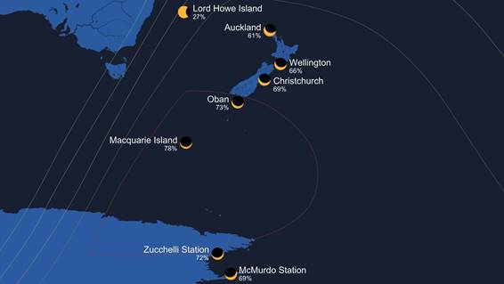
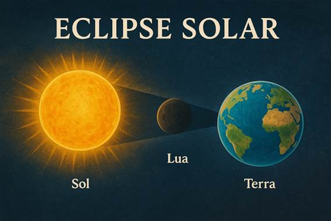

Eclipse solar de 21 de setembro de 2025
Um espetáculo astronômico visível no Pacífico Sul
No dia 21 de setembro de 2025 ocorrerá um eclipse solar parcial, visível principalmente no Pacífico Sul. Na Nova Zelândia, ele será visto localmente no nascer do Sol do dia 22, devido à diferença de fuso horário. Também poderá ser acompanhado em partes da Austrália, Fiji e em algumas áreas da Antártica. Em locais mais ao sul da Nova Zelândia, a cobertura do disco solar chegará a quase 80%, tornando o evento visualmente impactante, mesmo não sendo total.

O que é um eclipse solar?
Um eclipse solar acontece quando a Lua passa entre a Terra e o Sol, projetando sua sombra sobre uma região específica do planeta. Isso bloqueia a luz solar de forma total ou parcial para os observadores dentro da área atingida. A depender do alinhamento e da distância da Lua, o fenômeno pode ser total, anular ou parcial.
Tipos de eclipse solar
.1. Total — a Lua encobre completamente o disco solar, revelando a coroa solar.
2. Anular — a Lua encobre o centro do Sol, mas por estar mais distante, deixa um “anel de fogo” ao redor.
3. Parcial — apenas parte do Sol é coberta, como será o caso do eclipse de setembro de 2025.
Há ainda os eclipses híbridos, quando diferentes regiões da Terra observam diferentes tipos de eclipse.
O ciclo de Saros
Eclipses não ocorrem de maneira aleatória. Existe um ciclo chamado Saros, que dura cerca de 6.585,3 dias (aproximadamente 18 anos, 11 dias e 8 horas). Após esse período, um eclipse muito semelhante — em termos de geometria e alinhamento Sol-Lua-Terra — ocorre novamente. No entanto, devido à rotação da Terra, o local de observação varia.
Segurança na observação
Observar um eclipse solar é fascinante, mas pode ser perigoso se feito sem proteção adequada. Olhar diretamente para o Sol pode causar danos irreversíveis à visão. Para observar de forma segura:
- Use óculos especiais para eclipses (certificados ISO 12312-2).
- Utilize filtros solares próprios para telescópios, binóculos e câmeras.
- Experimente a projeção por pinhole (um furo em papelão projetando o Sol em uma superfície).
Nunca use óculos de sol comuns, radiografias, CDs, chapas de filme ou vidro escurecido.
Como acompanhar
Se você não estiver em regiões do Pacífico Sul, poderá assistir a transmissões ao vivo em sites de astronomia e observatórios. Plataformas como TimeandDate, TheSkyLive e transmissões oficiais da NASA disponibilizam coberturas completas em tempo real.
Por que vale a pena observar?
Mesmo um eclipse parcial traz uma experiência inesquecível: o céu escurece levemente, a luz ambiente muda de cor e a imagem do Sol em forma de crescente é única. Além da beleza, eclipses solares inspiram curiosidade científica e são uma oportunidade de aprendizado.
Fontes utilizadas (lista das principais referências consultadas para esta matéria):
· TimeandDate — September 21, 2025 Partial Solar Eclipse (mapas e horários). Time and Date
· Wikipedia — Solar eclipse of September 21, 2025 e artigos sobre tipos de eclipses. Wikipedia
· EarthSky — A deep partial solar eclipse September 21, 2025 (resumo e contexto de visibilidade). TerraCéu
· NASA / GSFC — páginas sobre Saros e periodicidade de eclipses. NASA Eclipse+1
· TheSkyLive / StarWalk — detalhes locais e mapas de visibilidade (valores de cobertura por cidades/ilhas usados para o gráfico). TheSkyLive
· Prevent Blindness / guias de segurança para observação solar. Prevent Blindness